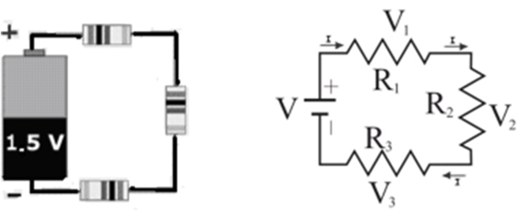
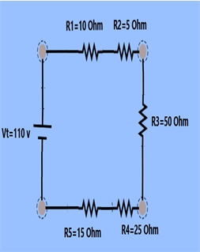
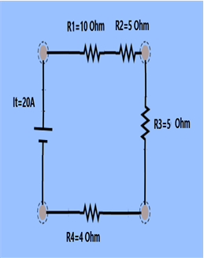
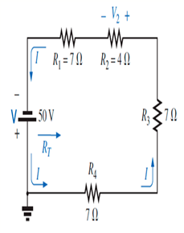

Circuito eléctrico
Para hacer funcionar un artefacto eléctrico es necesario lograr que los electrones libres recorran varias veces el interior de los conductores. Así cada vez que enciendes el televisor, el equipo de sonido o una linterna, haces fluir una corriente de electrones en un circuito eléctrico.
Un circuito eléctrico es un conjunto de conductores unidos a uno o varios generadores de corriente eléctrica, que mantienen el flujo de electrones constante en el tiempo.
Además de los generadores existen otros elementos que forman parte de un circuito: los interruptores, los conectores y los aparatos eléctricos.
⦁ Los interruptores son dispositivos que permiten interrumpir a voluntad el paso de la corriente por un circuito.
⦁ Los conectores son cables y demás conexiones que unen los distintos elementos que forman el circuito. En general, son fabricados a partir de los metales y, como tales, constituyen puntos de igual potencial cada uno.
⦁ Los aparatos eléctricos son los instrumentos o los dispositivos que funcionan cuando circula una corriente a través de ellos.
Todos los elementos de los circuitos eléctricos suelen ser representados por medio de símbolos, que son reconocidos mundialmente y que permiten simplificar el proceso de diagramación de un circuito. 
Para que un circuito funcione es necesario crear un camino por el cual los electrones puedan circular. Cuando esto ocurre se dice que el circuito está cerrado. Si se desconecta el interruptor o alguno de los cables la corriente deja de fluir y se dice que el circuito está abierto.
Cuando las dos terminales de una pila se conectan directamente con un alambre, la corriente eléctrica circula por este pero no llega a la bombilla y por tanto, no enciende. Esta conexión se denomina corto circuito, y en ella el alambre se calienta tanto que puede producir un incendio.
Cuando por error se provoca un corto circuito en casa, se observa un chispazo, se presenta un olor a cable quemado y, muy posiblemente, se bajan los tacos o se funden los fusibles.
Circuitos eléctricos en serieEl circuito eléctrico mas sencillo es el Circuito eléctrico en serie, en el cual los elementos que consumen energía eléctrica (televisores, focos, celulares, etc.) se colocan de tal forma que la salida de uno de ellos se conecta a la entrada del siguiente y así sucesivamente.
Este tipo de circuitos posee las siguientes características.
⦁ Presenta un solo camino para el paso de los electrones. Por lo que la intensidad de corriente que pasa por cada uno de los elementos es la misma y es igual a la intensidad de corriente eléctrica total del circuito.
⦁ La resistencia total del circuito es igual a la suma de las resistencias individuales de los elementos.
⦁ El voltaje total del circuito es igual a la suma de los voltajes que hay en cada uno de los elementos. Los voltajes individuales dependen del valor de las resistencias individuales y de la intensidad de corriente total (o individual).
Las fórmulas a utilizar son:
\(I_T = I_1 = I_2 = I_3 = …\)
\(R_T = R_1 + R_2 + R_3 + …\)
\(V_T = V_1 + V_2 + V_3 + …\)
Donde
\(I_T, R_T, V_T\) son la intensidad de corriente total, resistencia eléctrica total, voltaje total
\(I_1, I_2, I_3, ...\) son la intensidad de corriente en cada elemento
\(R_1, R_2, R_3, ...\) son la resistencia eléctrica en cada elemento
\(V_1, V_2, V_3, ...\) son el voltaje en cada elemento
Su representación es

Donde:
\(V\) = diferencia de potencial aplicado a los extremos del conductor en volts (V)
\(R\) = resistencia del conductor en ohms (Ω)
\(I\) = intensidad de la corriente que circula por el conductor en amperes (A)

Ejemplo 1. Calcular el voltaje y la intensidad de corriente que circula por cada uno de los elementos del siguiente circuito.

La intensidad de corriente que pasa por cada uno de los elementos es igual a la intensidad de corriente total, por lo que primero debemos calcular la intensidad total, pero para ello necesitamos calcular la resistencia total.
\(R_T = R_1 + R_2 + R_3 +R_4+R_4\)
\(R_T = 10\,\Omega + 5\,\Omega + 50\,\Omega + 25\,\Omega + 15\,\Omega\)
\(R_T = 105\,\Omega\)
Ahora calculamos la Intensidad de corriente total con la Ley de Ohm
\(\displaystyle I_T = \frac{V_T }{ R_T}\)
\(\displaystyle I_T = \frac {110\,V}{ 105\,\Omega}\)
\(I_T = 1.05\,A\)
Calculamos las intensidades en cada resistencia
\(I_T = I_1 = I_2 = I_3 = I_4 = I_5 = 1.05\,A\)
Calculamos voltajes en cada resistencia con la ley de Ohm
\(V_1 = (I_1) (R_1) = (1.05\,A) (10\,\Omega) = 10.5\,V\)
\(V_2 = (I_2) (R_2) = (1.05\,A) (5\,\Omega) = 5.25\, V\)
\(V_3 = (I_3) (R_3) = (1.05\,A) (50\,\Omega) = 52.5\,V\)
\(V_4 = (I_4) (R_4) = (1.05\,A) (25\,\Omega) = 26.25\,V\)
\(V_5 = (I_5) (R_5) = (1.05\,A) (15\,\Omega) = 15.75\,V\)
Ejemplo 2. Calcular el voltaje que es necesario aplicar al siguiente circuito si necesitamos provocar una corriente eléctrica total de 20 A.

Ahora necesitamos calcular el voltaje total, pero para ello necesitamos calcular la resistencia total.
\(R_T = R_1 + R_2 + R_3 + R_4\)
\(R_T = 10\,\Omega + 5\,\Omega + 5\,\Omega + 4\,\Omega\)
\(R_T = 24\,\Omega\)
Ahora calculamos el voltaje total con la Ley de Ohm
\(\displaystyle I_T = \frac{V_T}{ R_T}\)
\(V_T = (I_T) (R_T)\)
\(V_T = (20\,A) (24\,\Omega)\)
\(V_T = 480 \,V\)
Ejemplo 3. Determine la resistencia total, la corriente del circuito y el voltaje en la resistencia dos.

Calculamos la resistencia total
\(R_T = R_1 + R_2 + R_3 + R_4\)
\(R_T = 7\,\Omega + 4\,\Omega + 7\,\Omega + 7\,\Omega\)
\(R_T = 25\,\Omega\)
Ahora calculamos la Intensidad de corriente total con la Ley de Ohm
\(\displaystyle I_T = \frac{V_T}{ R_T}\)
\(\displaystyle I_T = \frac {50\,V}{ 25\,\Omega}\)
\(I_T = 2\, A\)
Por ultimo calculamos el voltaje en la resistencia 2 con la Ley de Ohm
\(\displaystyle I_2 = \frac {V_2}{R_2}\)
\(V_2 = (I_2) (R_2)\)
\(V_2 = (2\,A) (4\,\Omega)\)
\(V_2 = 8\,V\)
Recursos adicionales
Haz click en el siguiente enlace para ver tutoriales relacionados con el tema.